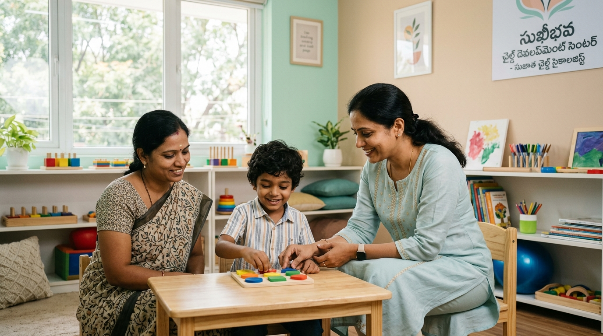
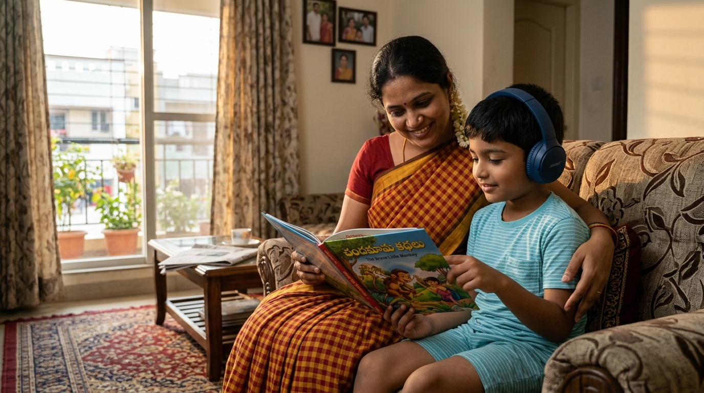

Communication & Social Interaction
Differences in conversational flow, body language, non-verbal expression, or reading social subtleties. Direct, honest, and literal communication styles are common.
Explore autism, learn about individual differences, and discover ways families can seek informed guidance and support.

Developing healthy coping strategies in a safe environment.
Autism, or Autism Spectrum Condition, is a neurodevelopmental difference that shapes how an individual experiences, communicates with, and perceives the world around them.
Autistic individuals may communicate, learn, interact, or process sensory stimuli differently than neurotypical individuals. Because autism is a spectrum, no two autistic people have the exact same profile, combination of strengths, or support needs.
Understanding and acceptance—rather than fear or stigma—create the conditions where neurodivergent individuals and their families can truly thrive.
Autism presents uniquely in every person. Rather than viewing differences as deficits, we observe how individuals process, express, and navigate daily environments.
Differences in conversational flow, body language, non-verbal expression, or reading social subtleties. Direct, honest, and literal communication styles are common.
Heightened (hyper) or reduced (hypo) responsiveness to auditory tones, bright lights, textures, physical contact, temperature, or crowded environments.
A deep appreciation for predictability, structured schedules, and familiar rituals. Unexpected changes can induce stress and benefit from clear advance preparation.
Sustained dedication to specialized interests, attention to nuanced details, logical systems, artistic talents, or unique cognitive memory abilities.
Remember: These characteristics should never be treated as a diagnostic checklist. Clinical evaluation requires formal interdisciplinary observation.
Explore Signs & When to Seek Guidance →
Noticing developmental differences in your child can bring many questions. Moving forward with compassionate observation and patience provides clarity.
If you notice persistent challenges with communication milestones, emotional regulation, high sensory distress, or significant social anxiety, discussing these with an experienced clinician brings reassurance.
No website, article, or online checklist can replace a comprehensive developmental evaluation conducted by licensed mental health and medical professionals.
At CRCT, our therapeutic programs are tailored specifically to the unique cognitive, communication, sensory, and behavioral strengths of neurodivergent children, adolescents, and their families.
Gentle observational assessments, tracking developmental progress, identifying early communication differences, and offering reassuring guidance without clinical panic.
Applied Behavior Analysis and positive reinforcement strategies tailored to foster independent life skills, reduce emotional frustration, and support adaptive routines.
Identifying auditory, tactile, and visual sensitivities. Helping families design sensory-safe decompression spaces and gentle coping techniques for emotional regulation.
Empowering children through visual schedules, picture exchange supports (AAC), social stories, and validating diverse conversational styles without forcing masking.
Carl Rogers humanistic counselling for parents and caregivers—providing emotional validation, stress relief, sibling guidance, and practical coping tools for daily life.
Collaboration with schools and educators to implement structured classroom routines, individualized learning adaptations, and supportive transitions for autistic students.
Listed in our official brochure, our multidisciplinary team combines clinical psychiatric insight and behavioral therapeutic expertise.
All consultations are arranged on prior appointment only to protect confidentiality and ensure adequate time.
Find answers to common questions about autism, seeking guidance, and scheduling support with CRCT.